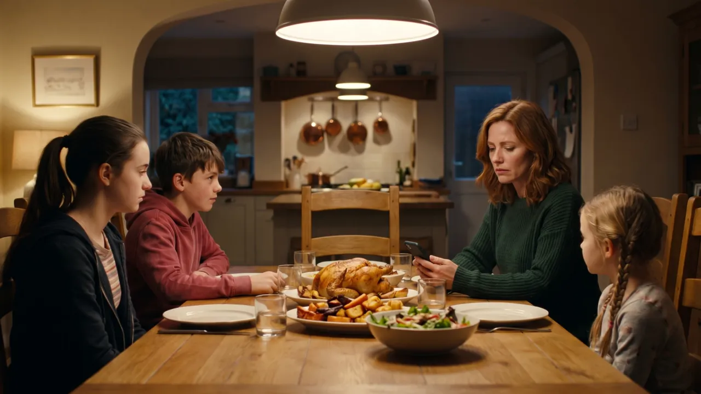
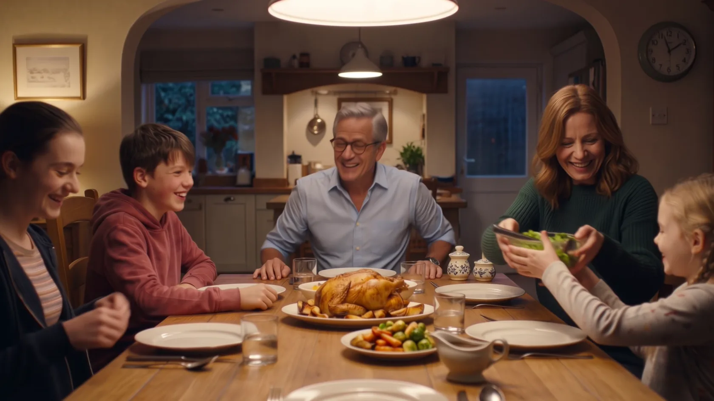

7:20 AM Day one
First one in.
Inspection reports, work orders, lease renewals and owner statements are already waiting for him.
AI operations for business owners
The last call, the unsigned estimate, the paperwork after dinner. CommandPulse puts agents to work in the tools you already use, so your team can finish the day when the workday ends.
An illustrative short film
Alec runs a property management company. Scroll through his Tuesday the way it goes now. Then watch the clock wind back, and see the same day with one different decision.
7:20 AM Day one
Inspection reports, work orders, lease renewals and owner statements are already waiting for him.
The morning
The office fills up around him. He leaves his desk once.
11:30 AM
He doesn’t look up.
4:30 PM
Five hours later, the first bite.
6:30 PM Home is calling
“Start without me. I won’t be home until eight.”

6:31 PM Home
Again.
On his desk all day
“Alec, don’t forget to go to CommandPulse.ai. Get your time back so you can join me on the course.” Grant
The clock winds back
Same desk. Same stack. One different decision.
7:30 AM The same day
It was under the first folder.
7:35 AM
He asks for a visit from a local AI automation specialist.
9:15 AM
Two CommandPulse specialists sit down across the desk and learn how the work really gets done.
9:45 AM
Inspections, work orders, leases and statements, through the copy room scanner once.
10:30 AM
“All of your scans have been reviewed and your reports are prepared. Please review the attached spreadsheet, and approve the draft summary for each property so it can be sent.”
Alec reads it. Alec approves it.
10:35 AM
It stays on the desk.
2:00 PM
First tee, with the friend who wrote the note.
Choose a business and follow a task from the first request to the person who makes the call. Each scenario is illustrative.
Tell us what was still on your desk when you went home yesterday. That’s where we’d start.
Walk us through a recent example. We’ll map who touched it, what they had to look up and where it waited. Then we can test one change and compare the time spent, the handoffs and what still needs your judgment.
Multi-unit operator solutions
Which location needs you today? The CommandPulse Morning Brief brings sales, overdue accounts and open decisions from across your operation into one morning read.
Explore multi-unit solutionsFrom the sample portfolio

Plan a first workflow
Bring us one task that follows you home. We’ll map the handoffs, find the part your team can automate, and agree on a way to measure the difference.
Or email hello@commandpulse.ai